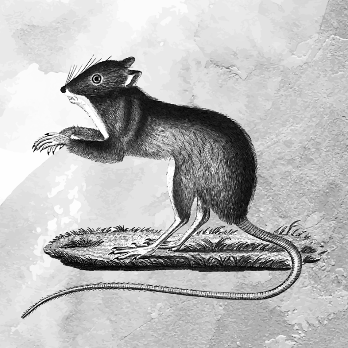
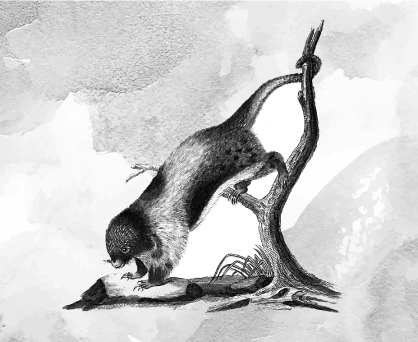
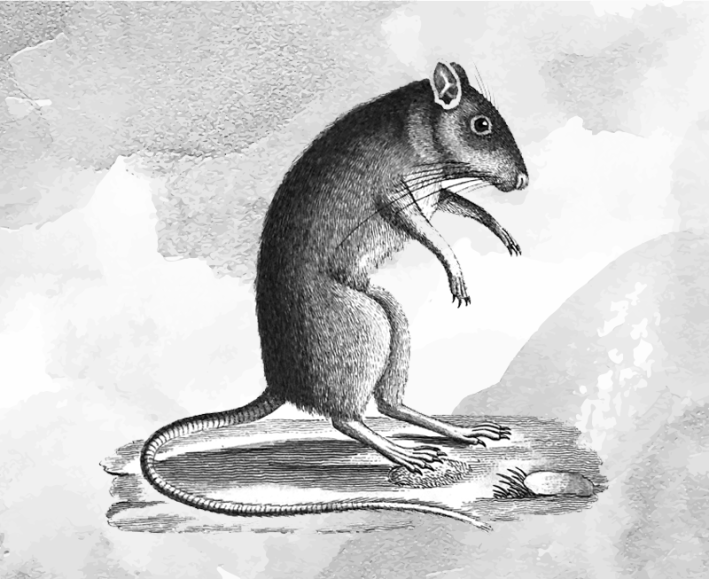

Hundreds and hundreds were the truths and they were all beautiful.
—Sherwood Anderson
Joanna was the perfect height to be a princess, but she was employed as a chipmunk. She was glad when she got to work early, had her pick of heads. You might think the selection would be a question of mood or disposition, whether you wanted to be the prankster or play it straight that day, but really it was a very simple matter of how much weight you wished to carry, how awkwardly it would sit on your neck.
There are people who get their dream jobs, and Joanna’s had been to work magic in that kingdom. It was not a dream, or a reality, I would have guessed had Joanna not told me, later, far away in a book bindery, as we sewed signatures taut. But then I suppose half the job was a kind of disappearing, avoiding suspicion or detection, even if the other half turned on being unmistakable.
Everyone in her division was sorted and distinguished by the sole characteristic of height. It’s worth noting that the taxonomy of masked characters has nothing to do with good or evil, male or female, leading or supporting, old or young, human or otherwise. It is refreshingly free of dichotomy. One lives by the great constant of which costume will fit. There is no personality inventory or aptitude test. There is only the gradient of stature, steps that sort into whole classes of what you might be.

What you stepped into then was a new way of being. What you stepped into had whole cooling systems and strategic fans, protocols for feeling faint. What you stepped into included the day Joanna met a family and got waved into a Kodak moment. She bent her chipmunk knees and crouched down to better frame the picture, chipmunk paw in the hand of a very little girl.
This was an adorable child, hair in pigtails, who knew how to smile for the camera and at the same time speak through bared teeth. The kid, clearly adored, clearly the center of not just this tableau, spoke in the hiss of a whisper that would not reach the camera.
I can feel your human fingers.
As if blackmail might come next.
The chipmunk said nothing—Joanna said nothing—but perhaps in this moment froze, and not just for the sake of the shutter.
There is such power in knowing things. It is so compelling to tell. It is not enough to have a piece of information, we must set the air vibrating with it. The old bestiaries knew as much when they claimed: Lion cubs are born dead. They stay dead for three days, the bestiaries said, until their mother licks them and their father breathes life into them. The scribes meant the lion but also the divine father. They meant to say something about spirit and this mortal coil. They meant allegory over natural history, every time. But didn’t they mean, too, that this is how it always is: the material fact of the world dead to us, every new thing dead to us until we have ways to make it mean something? To, as we say, “bring it to life”? And don’t we, over and over, do that with our mouths, with the movement of our tongues and the shape of our breath?
Maybe it was just the distortion of speech through gritted teeth, but it struck the chipmunk as so purposeful, so malign, so totally creepy. It was a good story, later, in the book bindery—I know that we laughed—but it haunts me still.
This was the sting, the delicious sting, of discovering a lie.
There’s part of me that likes to think somewhere there’s a whole album of such encounters, maybe not just in this little girl’s family but in others, too, probably all stacked away, all but forgotten, but somewhere a document of fantasy after fantasy brought close and put on notice. Because wouldn’t we just? Revel in our cleverness. Tell being after being we were on to them. Be sure, at all costs, to be nobody’s fool.
I can feel your human fingers. Obviously, the child was not wrong, but this honesty was not refreshing. It was not the relief of disclosure or unburdening, a statement of fact spoken through a little screen, to a confessor confined in the vessel of a tiny sacred space.

Nor was it eureka, the joy of figuring something out. Neither was it the thrill of sharing a secret or the delight of being in on the gag. It was not the privilege of witness or the humility of discovery or any species of awe in knowing—for sure—anything at all. No, I think, just the opposite. It was not inclusion but rejection, not an expansion of the world but a contraction making it smaller. This was the sting, the delicious sting, of discovering a lie.
The chipmunk could not speak back, of course. Because chipmunks do not speak and it was not allowed, and anyway, what could you say? What was there to say in the face of a full-on power move, six words long, in which the chipmunk was outed, the jig was up, and magic itself was a lie? What do you say in such a moment, to such a child?
I mean, she was on to something. This was a chipmunk made up, then made by and made of human fingers. It was human fingers all the way down. And to the extent she was speaking truth to power, I say power to her! What do we suffer because we won’t tell it how it is? I am rooting for every bit of autonomy and self-possession and standing up to authority inherent in this act. I am all for discovery. I believe in observation, that what we attend to will change the world. I think all those parts bode well.
The world does not cleave neatly into abstract and concrete.
But this child was not in the grip of epiphany, she was sending a message. She was a reckoning. Backdropped by an actual soft underbelly, she went straight to a vulnerable spot, and I cannot say if she did or did not know exactly what she was doing. There are so many kinds of innocence. But here I cannot help but see both: the righteousness and the cunning.
I don’t remember who all read me fairy tales growing up, but it was my father specifically who liked to bring up The Book of the Grotesque. Sherwood Anderson writes about it in a story of the same name: a book that was never published, penned by an old writer animated by his work and saved from the fate it describes because “something inside him was altogether young.” The book suggests that in the beginning of the world “there were a great many thoughts but no such thing as a truth,” goes on to assert we composite thoughts together to make the truths ourselves. To believe solely in any one truth, the book says, makes of it a falsehood and its believer a grotesque.
Maybe it’s because I’ve heard it since I was young, part of the life my father breathed into me, but it still strikes me as correct. The folly of a truth too closely held. Indeed, the cruelty of a partial truth plays out again and again, there to be seen, an insult, a shard of it stuck under the skin. Which is maybe why sometimes when I think about the child and the chipmunk, I am struck that it is so very, bone-deep sad. It seems like a cycle that could be hard to break. We are terrified we can’t afford to be taken advantage of. We like to be generous, but we fear our credulity. What a tragedy: We so hate to be taken in that we will pass up the chance to be taken with.

This child, so determined not to be duped, so set on getting her facts straight, so sure of what she could see and what she could feel, may have missed something intractable: It’s not so singular. It’s not even binary. We mix up the tangible and the intangible all the time. The world does not cleave neatly into abstract and concrete. We make meaning from metaphor, and we ask so much to be a vessel. If we are a tool-using creature, this is perhaps our favorite: the way we can make the physical hold the ineffable. My god. And sometimes back again. All tangled and entwined. We do it with language and story and tradition and ritual. Gloriously and incorrigibly, we do it all the time.
And maybe this is the least of it, but consider: There is nothing wrong with human fingers. What a ridiculous thing to have to say. Indeed, how astounding: They can be found even in chipmunk hands. Just as they can be found in a bindery, among punching cradles and the nipping press, rough-cutting parent sheets with dull knives, drawing linen thread through beeswax, deftly sewing with blunt needles, until a story has a shape, until a vision is married with language, until a thing has a story even before it has words.
The chipmunk holding the child’s hand wasn’t meant to defraud. No one was getting away with anything by working, within manifold limitations, to embody an ideal. To animate or articulate is so often to approximate, but if the gap between intention and substantiation is some kind of scandal it is also a marvel, a drop-dead absolute miracle, if any such thing exists.
I mean, what if we cooed it? I can feel your human fingers. We exclaim all the time at infants, at their little baby digits, fingers and toes at a scale we treat as unbelievable though we were once that size ourselves. How precious these miniatures, how tenacious the strength of their grip! The word we use is perfect, breathe it out at these creatures just come into being.
Yes, imagine if it had been a statement of tenderness. Oh, what love one might have for the bones that structure, the irreducible facts on which we hang all that imagination might conjure. I can feel your human fingers. I know you are there. I know this had to be made, fabricated, not like mendacity but like craft. Oh, how easily the tone can turn it. Change the lilt and right there, a statement of grace: “I see you, right to the core.” Why wouldn’t it be a relief to hear, in no uncertain terms, “I know exactly what you are”? 
Excerpted from No Less Strange or Wonderful: Essays in Curiosity, by A. Kendra Greene (Tin House).